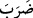
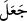
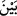
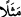

24. Ben size, babalarınızı üzerinde bulduğunuz (din)den daha doğrusunu
getirmişsem (yine mi bana uymazsınız)? deyince, dediler ki: Doğrusu biz sizinle
gönderilen şeyi inkâr ediyoruz.
25. Biz de onlardan intikam aldık. Bak, yalanlayanların sonu nasıl oldu?
“Onlardan” müşriklerden “biri, Rahmân’a benzer olarak anlattığı” -ki evlâd
babaya benzer- “kız çocuğuyla müjdelense yüzü simsiyah kesilir,” güya belâ ve
musîbetle dopdolu olduğu için “öfkesinden yutkunup durur”
Bir önceki âyetteki “siz” hitâbından dönülerek burada “onlar” diye gâib kalıbıyla
anlatılması, bu kimselerin sözkonusu kabahatlerini anlatmak, bu kabahatten duyulan
şaşkınlıktan dolayı onlardan yüz çevirip bu durumu başkalarına da anlatmak gerektiğini
bildirmek içindir.
Âyette geçen “__WORD__/darabe” kelimesi “yaptı, kıldı” anlamına gelen “__WORD__/ceale”
mânâsındadır. Yoksa açıkladı demek olan “__WORD__ /beyyene” mânâsında değildir. Yine
buradaki “__WORD__/meselen” kelimesi “şebîh” yani benzer mânâsında olup “kıssa-i acîbe:
ilginç kıssa” mânâsında değildir. Oysa Arapların “şöyle bir mesel darp edildi” sözünde
bahsedilen “mesel” den maksad “ilginç bir kıssa”dır.
Âyetin mânâsı şöyledir: “Müşriklerden birine Allah’a nispet ettikleri bir kız
çocuğunun doğum haberi verilince yüzü kapkara kesilir. Halbuki onlar, o kız çocuğunu
Allah’a mesel, şebîh yani benzer saymışlardı. Çünkü bilinen bir gerçektir ki çocuk
babaya benzer.”
Âyette bahsedilen “zalûl” sayrûret; yani değişim, dönüşüm ve intikal mânâsını ifâde
etmektedir. Yani kendisine verilen müjdenin kötülüğünden o müşriğin yüzü kapkara
kesilir. Bu sebepledir ki, rüyada yüzünün siyah olduğunu gören kimse kendisinin bir kız
çocuğu olacağını düşünür, rüyası da bu şekilde yorumlanır. Kişinin yüzünün karalığı,
kendisine verilen bu haberden hoşlanmadığından ibaret de olabilir. Dolayısıyla bu kişi
“öfkesinden yutkunup durur.” Yani o kimse dert, tasa ve kederle dopdoludur. “Kezîm
ve mekzûm”, dertli ve tasalı insan anlamındadır. Kamus’ta böyle açıklanmaktadır.
Fakir (Bursevî) der ki: Bu, müşriklerin sıfatıdır. Zîrâ onlar Allah’ı bilmezler.
Allah’ın açık kahrının altındaki gizli lutuflardan gâfildirler. Mümin ve muvahhidlere
gelince onlar ne olursa olsun Allah’tan gelene sevinirler. Çünkü onlar Allah’ın
elçilerinden hiç birini diğerinden ayırmazlar. İşte cömert kişi de kapısını hiçbir misafire
kapatmaz. Mâsivâdan fâni olanın, Allah’ın irâdesinden başka bir isteği yoktur.
Şâir der ki:
Bütün arzulardan vazgeçtim, maksad ve murâdım sona erdi.
Çünkü arzular, maksûdun yüzünde perde idi.